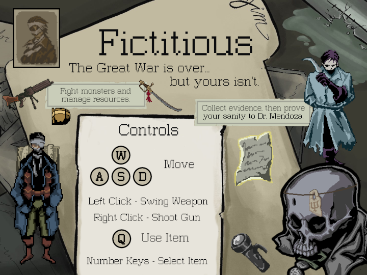
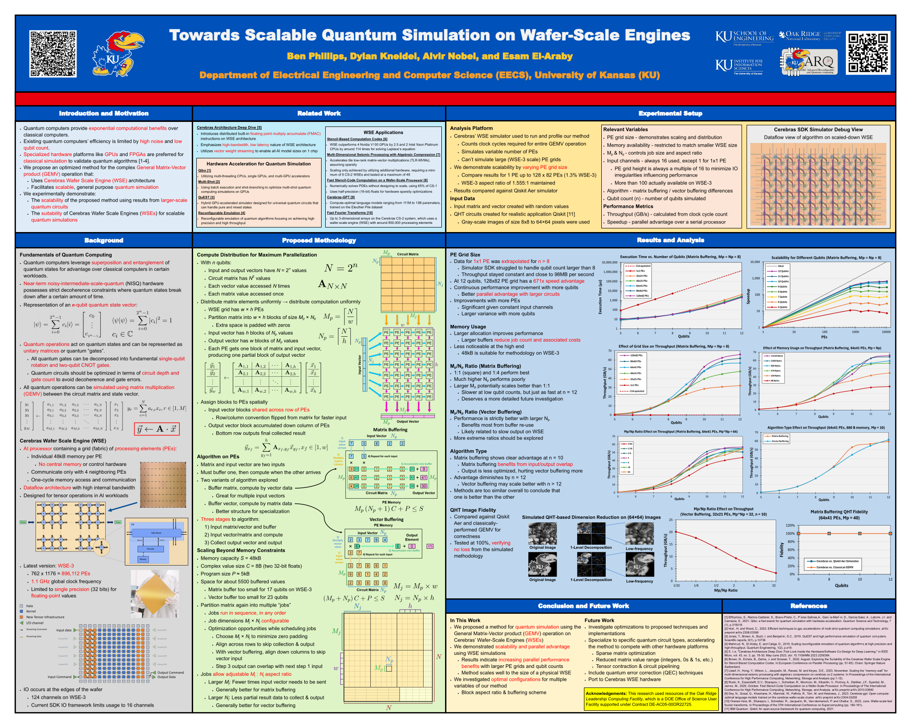

Ben Phillips - Official Website
| Home | About Me | Demos | Projects | Game Devblog |
|---|
Projects
| Page | 1 | 2 | 3 |
|---|
(See the Demos page for web-hosted projects.)
CLIC Handheld Digital Camera
January - May 2025
Project Poster | Firmware Repo
My undergraduate capstone project was building a portable digital camera from parts. I was the software lead, and wrote the firmware in C in an embedded Linux environment. Frameworks like V4L2 and OpenGL ES were central to the firmware, alongside obscure custom drivers for our display device.
I worked with three friends, who identified parts and designed the hardware and case. I worked closely with them to make sure we had the features we wanted with our limited resources, and to avoid compatibility problems. For example, captured photos can be saved to an external SD card, but only while WiFi is disabled since the SDIO interface shared resources with the wireless networking hardware.
GISP Recon Camera
January - May 2025
Device Code | Host Monitor App
I designed and built a camera system to investigate the state of a Greenland Ice Sheet Project (GISP) borehole at summit station. The hole was sealed off decades ago, and now researchers want to survey it to help plan the re-drilling operation. The operating environment is very cold, dark, and space-constrained, and involves unique risks. Specifically, the device needed to fit in a 4cm cylindrical radius and operate at -30°C.
Everything beyond these constraints and my budget was up to me to choose a strategy, parts, and structure. My prototype uses three separate OV2640 image sensors and wide-angle lenses to achieve an uninterrupted 360° view of the walls of the borehole. I chose a Teensy 4.1 as the microcontroller for its high clock rate, large GPIO array, narrow footprint, and low cost. Finally, power and data from a computer on the surface would be delivered through a 300ft CAT6 cable soldered to the Teensy's USB pads.
The firmware for the microcontroller achieves the complex task of receiving and relaying a real-time image signal. This makes some code speed-critical, as it determines the maximum data rate of the image feed. On top of this, the OV2640 has very poor documentation, and configuring the sensor through I2C required extensive research and trial-and-error. I also wrote the host app for monitoring the image feeds and communicating with the device. Device firmware is baremetal C++, host app is written in Rust.
Game Sound Design - Fictitious
January - May 2025
Fictitious Itch.io Page | Game Design Document
I was the sound designer for Fictitious, an indie game made by a team of 11 for an interdisciplinary game design course. We used Wwise for the sound and music engine, and I implemented the sound effect systems in our Godot project. Over 120 sound effect files went into the final release. The game is available for download for Windows and Mac on the Itch.io page.
Quantum Algorithm Simulation
November 2024
Publication Site | Full resolution PDF
Last November I published and presented a poster at Supercomputing 2024 on my current research project with the KUARQ research group. The goal of the project is to develop a quantum algorithm emulation platform for the Cerebras WSE, making use of its highly parallel architecture for the demanding emulation process.
| Page | 1 | 2 | 3 |
|---|
|
ben.a.phillips@outlook.com
|
/in/ben-a-phillips
|
github.com/Jorbon
|
|---|